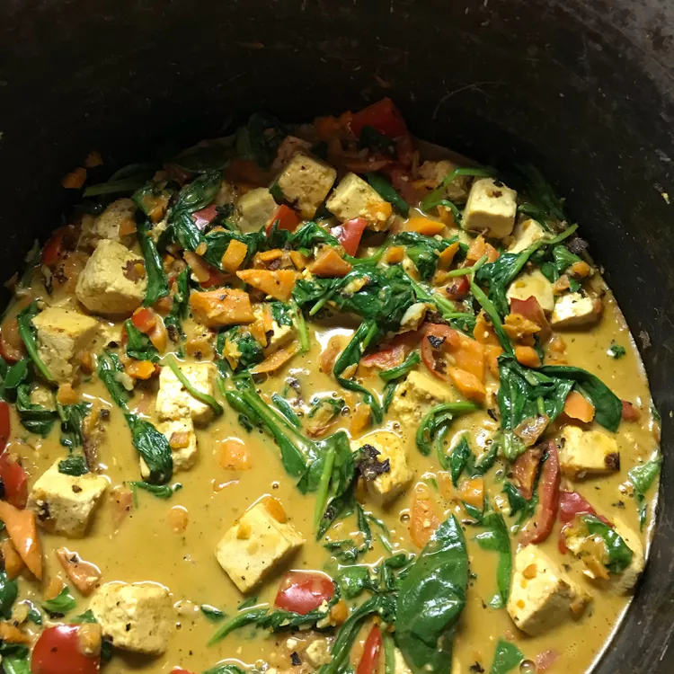

Tofu Stir-Fry with Peanut Sauce
Back

Description
Healthy, Filling, and Full of Flavor!
35 minutes, 4 servings
Ingredients
- 1 14oz can light coconut milk
- 1/4 cup creamy peanut butter
- 2 tablespoons low sodium soy sauce
- 2 tablespoons brown sugar
- 1 tablespoon lime juice
- 1 teaspoon Sriracha sauce
- 1/2 teaspoon ground chili pepper
- 1/2 teaspoon garlic powder
- 1 tablespoon olive oil
- 2 carrots, diced
- 1 red bell pepper, diced
- 1 14oz package firm tofu, drained and cubed
- 2 cups napa cabbage or baby bok choy
- 1 1/2 cups cooked white rice
Steps
- Whisk coconut milk, peanut butter, soy sauce, brown sugar, lime juice, Sriracha sauce, ground chili pepper, and garlic powder together in a bowl until a smooth sauce forms.
- Heat oil in a large skillet over medium-high heat. Add tofu and sauté until lightly browned, about 4 minutes per side. Add carrots and bell pepper; sauté until just tender, 1 to 2 minutes.
- Pour sauce into the skillet and stir to coat tofu and vegetables. Cook until flavors combine, about 5 minutes. Reduce the heat to low, then stir in cabbage or bok choy. Serve over white rice.